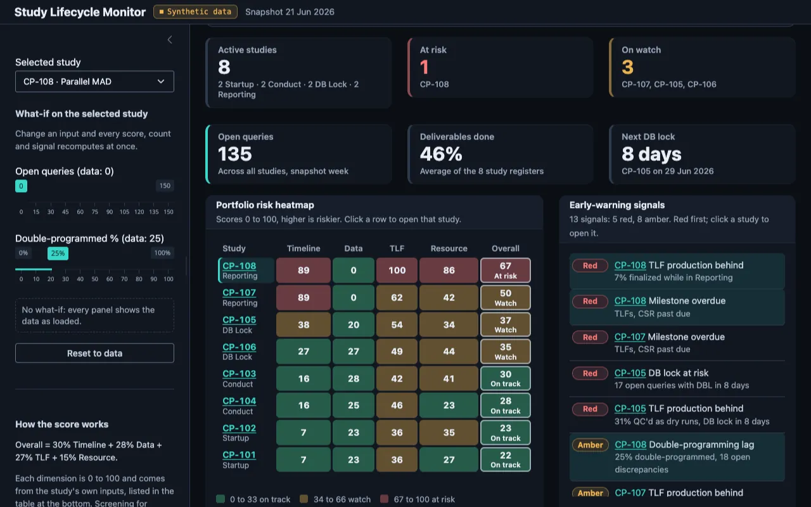

In-browser app
The in-browser Study Lifecycle Monitor is not on this copy of the site
When the site is published with GitHub Actions, the publishing workflow (.github/workflows/pages.yml) exports the Study Lifecycle Monitor to this address with Shinylive, so it runs in your browser. This copy of the site was served without that step, so you see this placeholder instead.
The app also runs in local R: shiny::runApp("lifecycle_dashboard/shiny"). Synthetic data only.
